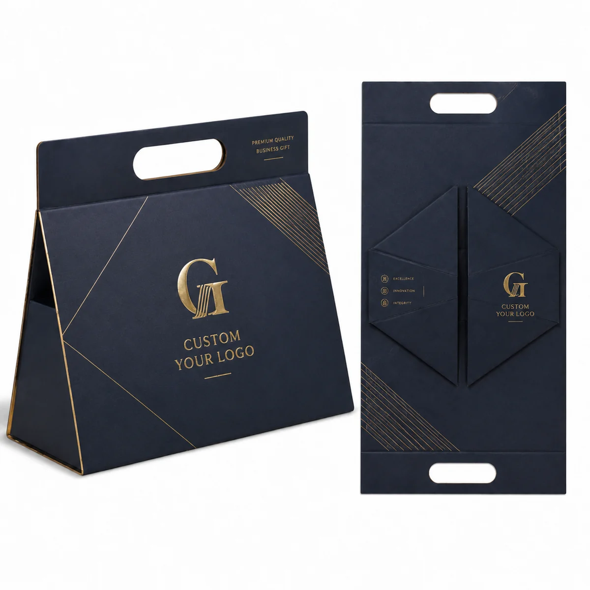

01
تصميم أسود أنيق
أسود بمقابض حبلية
علبة عرض سوداء فاخرة بمقبض حبل مثبت وتفاصيل معدنية متباينة.
استفسر عن هذا النمط ↗

تغليف هدايا للأعمال · مباشرة من المصنع · دونغقوان
نصنع علب هدايا مخصصة بالجملة في مصنعنا بمدينة دونغقوان، لتناسب منتجك وهويتك التجارية. اختر مقابض حبلية أو مدمجة، ثم أكد المقاس والتصميم والتشطيب قبل بدء الإنتاج.


تصنيع حسب الطلبمقابض حبلية · شرائط · تشطيبات بالرقائق
 داخل المصنع · دونغقوان
داخل المصنع · دونغقوانللمشترين وفرق التوريد
اطلع على معدات الإنتاج والشهادات وخطوات الاعتماد الخاصة بكل مشروع علبة هدايا مخصصة.
تصنيع في دونغقوان.
مصممة لتناسب منتجك.
استكشف علب وصناديق الهدايا القابلة للطي بمقابض وتصميمات مطبوعة وتشطيبات متنوعة. يتم تأكيد المواد والتركيب النهائيين وفق العينة المعتمدة.
ما المعلومات المطلوبة للعرض؟استكشف الخيارات
استكشف علب الهدايا القابلة للطي بمقابض حبلية أو مدمجة، وتصميمات مطبوعة، وتفاصيل رقائق معدنية وشرائط، وخيارات ألوان وتأثيرات قزحية وأسطح مزخرفة. يتم تأكيد التركيب والمواد لكل مشروع.
تصميم أسود أنيق
علبة عرض سوداء فاخرة بمقبض حبل مثبت وتفاصيل معدنية متباينة.
استفسر عن هذا النمط ↗

طباعة موسمية وموضوعية
استكشف الرسومات المناسبة للمناسبات والزخارف والألوان المتناسقة، بما في ذلك تصميم مستوحى من رمضان. يتم اعتماد النصوص والرسومات والتشطيب وفق التصميم النهائي.
استفسر عن الطباعة الموسمية ↗

مظهر معدني دافئ
لون ذهبي لعلب الهدايا والمجموعات الموسمية والعروض المميزة.
استفسر عن هذا النمط ↗


تصميم مطبوع وهيكل قابل للطي
استكشف الطباعة الخاصة بالعلامة التجارية والأنماط المتكررة وخيارات الألوان على هيكل علبة قابلة للطي. يتم تأكيد التصميم والألوان والتركيب النهائي بعينة معتمدة.
استفسر عن خيارات الطباعة ↗تفاصيل رقائق وطباعة فاخرة
اجمع بين اللون الداكن والخطوط الدقيقة بالرقائق أو الشعار المخصص أو الرسومات التفصيلية لمظهر أكثر فخامة. يتم تأكيد لون الرقائق وموضعها في التصميم النهائي.
استفسر عن تفاصيل الرقائق ↗
تفاصيل الشريط والفيونكة
أضف شريطاً متناسقاً أو فيونكة للحصول على مظهر جاهز للتقديم. يمكن مناقشة لون الشريط وعرضه وموضع تثبيته مع أبعاد العلبة.
استفسر عن تفاصيل الشريط ↗
خيارات ألوان وهيكل قابل للطي
قارن بين خيارات الألوان وشاهد كيف يتحول الهيكل المسطح إلى علبة هدايا بمقبض. يتم تأكيد الأبعاد النهائية والورق واللون والتركيب وفق منتجك.
استفسر عن الألوان والتركيب ↗
كحلي ورقائق ذهبية
علبة هدايا كحلية من قطعة واحدة قابلة للطي، بمقبض مدمج ولمسات ذهبية دقيقة. يمكن تحديد الشعار وموقع الرقائق والمقاس لكل مشروع.
استفسر عن هذا النمط ↗
طباعة نباتية عاجية
علبة هدايا فاتحة من قطعة واحدة قابلة للطي، برسومات نباتية رقيقة ومقبض مدمج. اسأل عن الطباعة المخصصة وتشطيب الورق وأبعاد العلبة.
استفسر عن هذا النمط ↗
خيارات اللون والمقبض
قارن الألوان المتناسقة وأنماط المقابض لعلب الهدايا القابلة للطي من قطعة واحدة. يتم تأكيد الورق والتركيب وتثبيت المقبض والتصميم وفق المنتج والعينة المعتمدة.
استفسر عن الألوان والمقابض ↗هل لديك صورة مرجعية أو قالب قص؟
أرسلها مع أبعاد المنتج والكمية المستهدفة. يمكننا مراجعة التركيب والتشطيبات المناسبة.
تفاصيل ما قبل الإنتاج
صور المنتجات تحدد الاتجاه البصري، أما تفاصيل التصنيع فيجب تأكيدها قبل التسعير واعتماد العينة.
شارك أبعاد المنتج ووزنه، وحدد مقبض الحبل أو فتحة الحمل المدمجة وموضعها. يتم تأكيد التعزيز والتركيب وفق التصميم والعينة.
أرسل الشعار والرسومات واتجاه الألوان. راجع موضع الطباعة والنسخة النهائية قبل اعتماد النموذج.
حدد ورق التغليف واللوح الداعم والتشطيبات المطلوبة. يتم تأكيد المجموعة النهائية على العينة المعتمدة.
حدد ما إذا كانت العلب ستُعبأ مسطحة أو مركبة، مع الكمية والوجهة وموعد التسليم المطلوب لتقييم العرض.
الصور المعروضة مراجع بصرية وليست مشروعات عملاء مسماة. يتم اعتماد التصميم والخامات والتركيب النهائي وفق عينة المشروع.
هل لديك صورة أو رسم أولي؟ أرسله مع المقاس والكمية لنبدأ من موجز واضح.
ناقش موجز مشروعك عبر واتسابمواصفات المنتج حسب الطلب
تصنع العلب وفق متطلبات كل مشروع. يوضح الجدول المعلومات المطلوب تحديدها؛ أما القيم النهائية فتتأكد للتصميم والعينة المختارين.
| البند | المعلومات المطلوبة | الحالة |
|---|---|---|
| مقاس العلبة | الطول الداخلي × العرض × الارتفاع، مع أبعاد المنتج ووزنه. | مقاس مخصص · يؤكد بالرسم أو العينة |
| التركيب القابل للطي | طريقة الفتح والإغلاق وشكل العلبة عند الطي والتجميع. | حسب المشروع · يؤكد للتركيب المختار |
| اللوح والورق الخارجي | نوع اللوح وسماكته وورق التغليف واللون والبطانة الداخلية. | يحدد ويعتمد لكل مشروع |
| المقبض | مقبض حبلي أو فتحة مفرغة، مع تحديد المادة والموقع والتدعيم. | يختار وفق المرجع ويؤكد بالعينة |
| الطباعة والتشطيب | التصميم والألوان والرقائق والتغليف والتذهيب البارز أو الأشعة فوق البنفسجية. | يتطلب اعتماد التصميم والتشطيب |
| الفاصل الداخلي | مادة الفاصل وترتيبه وتثبيت المنتج وحجرات الملحقات. | اختياري · وفق المنتج والعينة |
| الطلب والتوصيل | الكمية والوجهة وتاريخ التسليم وطريقة التعبئة المطلوبة. | يبدأ الحد الأدنى من 500 قطعة؛ ومدة التسليم التقديرية 15–25 يوماً. يؤكد الجدول النهائي وفق الوجهة والطلب. |
هل لديك صورة للمنتج أو أبعاد تقريبية فقط؟ أرسلها وسنساعدك في تحديد التفاصيل المتبقية.
راجع المواصفات عبر واتساب ↗المواد والطباعة والتشطيب
تؤثر أنواع الورق واللوح والتصميم والتشطيب بعضها في بعض. اخترها وفق المنتج ونمط الطي، ثم اعتمد التوليفة على عينة فعلية.
 01 · الورق واللوح
01 · الورق واللوحاختر الورق الخارجي حسب اللون والطباعة والملمس، وحدد درجة اللوح وسماكته وفق المقاس والتركيب ووزن المنتج.
درجة اللوح وسماكته تؤكدان لكل مشروع
 02 · الورق والطباعة
02 · الورق والطباعةاختر مظهراً يناسب علامتك التجارية وأرسل التصميم وموقع الشعار ومرجع اللون لاعتماد النتيجة.
تراجع النتيجة على نموذج الطباعة المعتمد
 03 · المقاس والداخل
03 · المقاس والداخلحدد طريقة الفتح والمقبض والترتيب الداخلي بما يناسب المنتج. يمكن تطوير فواصل للزجاجات والعبوات ومجموعات المنتجات.
تأكد من الملاءمة وفق أبعاد المنتج
تصنيع لدى Crown Win
شركة Dongguan Crown Win Package Co., Ltd. مصنع لعلب الهدايا في تشانغآن، دونغقوان. تشمل عمليات الإنتاج الطباعة والقص والتشطيب والتجميع والفحص.
تعرف على خطوات الطلب ↓ المنطقة الصناعية · تشانغآن · دونغقوان
المنطقة الصناعية · تشانغآن · دونغقوان
تساعد مراجعة الطباعة والنموذج على مطابقة التصميم للنتيجة المطلوبة.

ينفذ القص والتخديد وفق قالب القص والأبعاد المعتمدة.

ناقش خيارات مثل الرقائق الحرارية والتغليف والتذهيب البارز ومواضع اللمعان.
الشهادات والتوريد المسؤول
تحقق من النطاق ورقم الشهادة وتواريخ الصلاحية وفق متطلبات برنامجك قبل تأكيد الطلب.


كيفية الطلب
يتم تأكيد كل طلب وفق النمط المختار وملاءمة المنتج والتصميم والكمية والوجهة. نراجع التفاصيل معك قبل الإنتاج.
أرسل نمط العلبة وأبعاد المنتج ووزنه والكمية المستهدفة والوجهة والتاريخ المطلوب وأي تصميم أو صور مرجعية.
للبداية · تكفي المعلومات التقريبيةأكد المقاس والتركيب والمقبض والمواد والفاصل والتشطيب، ثم نراجع المتطلبات ونعد عرض السعر.
الحد الأدنى 500 قطعة · التسليم 15–25 يوماًراجع المواصفات النهائية والكمية والسعر ووجهة التسليم والشروط التجارية قبل تأكيد الطلب.
مواصفات مشتركة وواضحةراجع التصميم والألوان والتركيب والطي وملاءمة المنتج والتشطيب. تعتمد الحاجة إلى العينة على المشروع.
يبدأ الإنتاج بعد الاعتماد المطلوببعد الاعتمادات المطلوبة يبدأ الإنتاج والطباعة والقص والتشطيب والتجميع والفحص وفق المتطلبات المؤكدة.
تحدد معايير الفحص ضمن الطلبأكد طريقة التعبئة والشحن والعنوان والوثائق المطلوبة. ينسق موعد الإرسال والخدمات اللوجستية وفق الجدول المتفق عليه.
تؤكد ترتيبات الشحن قبل الإرسالأرسل التفاصيل المتوفرة، وسنساعدك في تحديد ما يحتاج إلى تأكيد.
التخطيط للطلب
أرسل المعلومات المتاحة، وسيساعدك فريق Crown Win في تأكيد المواصفات المتبقية.
أرسل نمط المقبض والمقاسات وصورة مرجعية لمراجعة التركيب والتثبيت المناسبين.
نصنع علب وصناديق هدايا قابلة للطي حسب الطلب. يبدأ الحد الأدنى من 500 قطعة؛ أرسل المقاس والكمية والتصميم أو صورة مرجعية لمراجعة المتطلبات وإعداد عرض السعر.
أرسل أبعاد المنتج ومقاس العلبة والتصميم أو مرجع العلامة التجارية لمراجعة التخطيط والعينة.
ابدأ بالنمط والطول والعرض والارتفاع وأبعاد المنتج والكمية والتصميم ووجهة التسليم والتاريخ المطلوب.
يبدأ الحد الأدنى للطلب من 500 قطعة. مدة التسليم التقديرية من 15 إلى 25 يوماً؛ ويؤكد الموعد النهائي وفق التركيب وتفاصيل الطلب والوجهة.
توضح الأمثلة تركيبات قابلة للطي. يرجى تأكيد شكل التعبئة للتركيب المختار عند طلب عرض السعر.
شاهد التفاصيل أثناء الحركة
شاهد تفاصيل المنتجات وجولة داخل المصنع. تساعد المقاطع على توضيح المراجع المتاحة؛ وتؤكد مواصفات كل مشروع وفق متطلباتك والعينة المعتمدة.
آراء العملاء
شاهد مقطع آراء العملاء واستمع إلى التعليقات في سياقها. تواصل معنا لمناقشة كيفية تنفيذ متطلبات التغليف الخاصة بك.
ناقش مشروعك عبر واتساب ↗منتجك وطريقة تقديمه
أرسل المقاس والكمية وصورة مرجعية عبر واتساب، وسنبدأ من هناك.
أرسل استفسارك عبر واتساب ↗